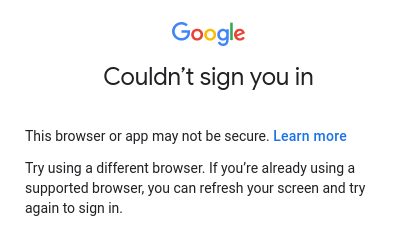
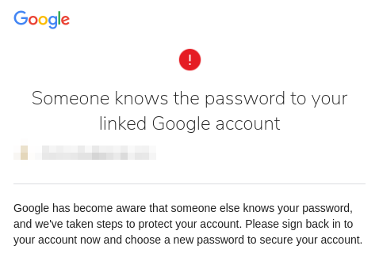

How Google's insidious* behavior led me to find superior alternatives.
I saw the above warning using Vivaldi: a successful and powerful Chromium based browser. There's nothing insecure about it. I tried to fix the problem by disabling all extensions, clearing all browser data, and enabling “less secure app access” in the Google account settings. Alas. The only solution I found was reinstalling the browser. But after having done so—five times—each time when clearing the cookies, or enabling a VPN, it wouldn't let me sign in again. Then the following email found my inbox.
“Someone knows the password to your linked Google Account”… Me. It was me! Obviously I know the password to my linked Google account. Forced to change my password I was duly annoyed. I realized how dependent I was. If Google unpredictably revokes access to your account, you can't log into anything else of their services: YouTube, Gmail, Play Store, Docs, Drive, Calendar, etc. Fortunately I already did a partial Google and social media exodus. Nevertheless, even when only using YouTube and Google Play, losing access startled me. Therefore, because I don't want to be put in this position again, I completed the exodus: discarding the need for a Google account.
A quick aside, I have nothing against monopolies as a general rule. Usually they grow so big because of a significantly superior service (1). But as convenient as they may be—even though their products aren't superior anymore—if their power goes to their head and they start pulling insidious shenanigans, like using false claims to deter people from browsers other than Chrome, then I'm out.
So that's exactly what I did and I was pleasantly surprised by the results. Believe it or not but my phone is more responsive and the battery lasts longer. Although the former might be due to the factory reset, I assume the latter has to do with the decrease in background processes due to 1. removing my Google account 2. subsequently disabling Google Play Store 3. disabling everything in the settings tab called Google services & preferences. Digital minimalism, it's so incredibly satisfying. You should try it. Your life was perfectly fine before you had all that extra stuff to worry about (or pay for); I learnt that from my teacher, Diogenes of Sinope, 404 – 323 BC.
| Pros | Cons |
|
|
Diogenes would suggest living on the streets, but I'm unsure if that's feasible, and you'd still be overwhelmed by ads. So what to do? One could completely avoid Google as there is plenty competition to choose from. A quick search for “Google alternatives” or a peek at No More Google or degoogle can suffice. Although, realistically, one will want to keep using some of their services, preferably without an account. As was the case for me.
YouTube has a lot of content nowhere else to be found. Fortunately one doesn't need an account (yet) to simply watch these videos. However, sometimes logging in is required. To circumvent logging in, use the YouTube front-end invidio.us, and select an instance such as ytprivate.com. It uses YouTube in the background, but discards the bullshit, making the website much faster. Just enter a search term, or copy-paste the YouTube URL or video ID, and you're good to go. If you require playlists or subscriptions, Invidious supports that too if you register. Importing or exporting data from other Invidious instances is possible as well.
If you want to manually create a playlist on YouTube without an account, append the following URL with the YouTube video IDs separated by commas, for example: https://www.youtube.com/watch_videos?video_ids=xUozVQVt1xI,ed0fRdTma9I.
When on mobile, NewPipe is the way. There are other YouTube front-ends, but I strongly recommend NewPipe because: it is highly configurable, it supports background play on a locked phone, it features easy downloading, it has no ads, it works hand in hand with PeerTube and Invidious, it's super fast, etc.
The Google Play store is something I was most worried about. I assumed using “their” apps necessitated a Google account. Not necessarily. The free apps don't require an account, the paid apps do. For example, I purchased Wolfram Alpha but can't install it without Google Play Store. And even if I could, I'd need my Google account as a receipt to reactivate it. In total I have 14 apps and one digital book I paid for. But as time passed I found better and free alternatives to all of them, or I merely donated to support their decision to refuse ads, not their premium functions. However, I can understand if this is a dealbreaker to those who are dependent on non-free apps.
Anyway, to install an app you just need an .apk file. But to avoid a time-consuming process, there are alternative app catalogues such as F-Droid and Aurora Store, these will serve most of your needs. I suggest perusing F-Droid first because its apps are FOSS (Free and Open Source Software); more than half of mine are on it. Here's a list of everyting I use: quitfacebook.org/file/software.html.
Not going to lie, it feels good to release the shackles; Google Play Store is disabled and everything works just fine. However, Google Play services needs to remain enabled for functionalities such as auto updates, push notifications, or geolocation (2). I can live with that, for now, but the decreased battery life is noticeable. If that's too much to ask, just disable it, or consider the alternative MicroG. I can't vouch for it yet, but it looks promising.
I'm only keeping this account just in case I need the key to the dungeon. Otherwise I use ProtonMail, which was developed by scientists at CERN (3); 'nuff said? Sure there are plenty of other providers, but man, developed at CERN, that's like a Vulcan salute to Trekkies.
🖖
On a PC Vivaldi Browser's quality does match up to its name—and we all know Four Seasons. I could throw around superlatives all day, but I won't spoil the pleasant surprise. What got me to click “set as default browser” was Vivaldi's unmatched simultaneous customizability and speed. Not surprisingly, it has a thriving community forum.
On mobile look no further than Kiwi Browser. To summarize their own website: fast, quiet, without annoyances. They aren't lying. Best of all, they support all extensions such as uBlock Origin and uMatrix; thumbs up if you know what they are already.
The only thing I used Google Drive for was backing up contacts. This can easily be replaced by exporting a .vcf file. Similarly, before a factory reset, I just manually use the export function of the few apps I want backups from.
But what in the case of a hard drive crash? For the most important files I use a directory that's immediately synced to MEGA by default. For instance, I'm writing this page on a file that's sent to the cloud each time it's saved. This is probably commonplace and trivial information for IT enthusiasts, but I'm certain that's not most people.
I admit I haven't found any search engine with better results than Google, despite its bias. If you want to avoid Google completely, use DuckDuckGo—but let's call it duck.com from now on so we can say “duck it” instead of “google it”.
Ideally, just be efficient and use shortcuts for multiple search engines.
If Google Authenticator is a Trump Hotel, then Aegis Authenticator is a Ritz-Carlton. Why? Aegis is open source, supports backups, and offers more security. Therefore, unless you want to be “grabbed by the pussy” (4), you know where to stay.
DeepL. The translations it produces are astounding; single words as well as full text translations. Try it, I'm confident you'll confirm that it beats Google.
Fuck ads, and I'm being polite. To find out how I block all of them I suggest you read my post “Ad blocking, or how to use the Web properly.”
I don't have a coherent answer yet; the problem is multifold and my expertise is lacking. Regardless, things don't feel right. For one, it greatly bothers me that there is a vast collection of fantastic software that doesn't get the attention it deserves. Especially the ones made by praiseworthy developers who refuse ads and trackers. Frequently they're hidden behind products of those who can spend the most on marketing, or they suffer traffic loss by biased search results. Consequently, these virtuous mindsets don't get incentivized as they earn significantly less money. Developers with a backbone deserve to be rewarded more. Additionally, the dumbing down of devices and software decreases all-around tech savviness and makes us more reliant while hypocritically increasing the attitude of taking things for granted.
To add fuel to the fire, we've become addicted to convenience because monopolies handed us everything on silver plate in return for our data, all so the consumption of whatever can be increased. It sounds like a conspiracy, but it isn't; data is seen as the new oil for just that reason: manipulation. Call me old-fashioned all you want, but I consider wilful manipulation evil. The fact that Facebook is still around after all their known scandals proves how hollow we've become.
“If they don’t stand for something, they will fall for anything.” —Anonymous proverb (6)
♔
* As a keen observer pointed out: disabling “Crypto Token” under privacy setting “Google Extensions” prevents logging in on Google services. This puts me in a pickle because I am embarrassed writing this article under false assumptions, however, the question remains why this option needs to be enabled in the first place… To be continued.
Comments.
You can use your Mastodon account to reply to this post.